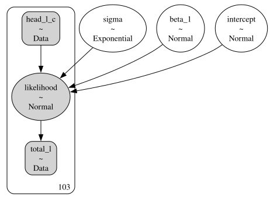

import numpy as np
import pandas as pd
from matplotlib import pyplot as plt
from scipy import stats as st
import pymc as pm
import arviz as azMany of the Bayesian textbooks mention ELPD (expected log pointwise predictive density) for model comparison. They usually provide some function inside a library (az.loo or compare from rethinking in R), you call it and pick the model with the higher one. But they don’t go through the calculation which leaves the reader/practitioner with a black-box. So, I wanted to attempt to shed some light on it via an example.
To start, let’s think of what a good predictive model looks like: Anytime it sees a new point, it shouldn’t be surprised by it – it should be within its expectation. An intuitive way to measure that would be to see how much density did the model assign to the actual value. However, since we’re in the Bayesian world we have plausible sets of parameters (our posterior) so we ask this question to each one of them.
Let’s go through an example.
You probably remember the possum data from other posts. Let’s predict total length (total_l, in cm) from head length (head_l, in mm).
possum = pd.read_csv('possum.csv')
possum.head()| site | pop | sex | age | head_l | skull_w | total_l | tail_l | |
|---|---|---|---|---|---|---|---|---|
| 0 | 1 | Vic | m | 8.0 | 94.1 | 60.4 | 89.0 | 36.0 |
| 1 | 1 | Vic | f | 6.0 | 92.5 | 57.6 | 91.5 | 36.5 |
| 2 | 1 | Vic | f | 6.0 | 94.0 | 60.0 | 95.5 | 39.0 |
| 3 | 1 | Vic | f | 6.0 | 93.2 | 57.1 | 92.0 | 38.0 |
| 4 | 1 | Vic | f | 2.0 | 91.5 | 56.3 | 85.5 | 36.0 |
I’ll center head length, so the intercept means expected total length of a possum with an average head length. It makes the prior easier to set, too.
df = possum[['head_l', 'total_l']].copy()
df['head_l_centered'] = df['head_l'] - df['head_l'].mean()(I am aware of the fact that I use the whole dataset for centering the variable. Since the post is about calculation of ELPD I wanted to move quickly to that)
For demonstration we’ll start with leaving the last data point out. This is the “leave one out (LOO)” part. Purpose of LOO is to make a data point new to the model: If it was seen during fitting, it wouldn’t be new, would it? And the whole idea of a good predictive model is to perform well on new data.
tmp_df = df.iloc[:-1, :]
left_out_data = df.iloc[-1, :]
print(df.shape[0], tmp_df.shape[0])
print(left_out_data)104 103
head_l 93.600000
total_l 89.000000
head_l_centered 0.997115
Name: 103, dtype: float64plt.figure(figsize=(7, 4))
plt.scatter(tmp_df['head_l_centered'], tmp_df['total_l'], s=15)
plt.xlabel('Head length (centered)')
plt.ylabel('Total length')
plt.show()
There’s a clear linear relationship here, we’ll specify a linear model.
coords = {'index':tmp_df.index.to_numpy().squeeze()}
coords{'index': array([ 0, 1, 2, 3, 4, 5, 6, 7, 8, 9, 10, 11, 12,
13, 14, 15, 16, 17, 18, 19, 20, 21, 22, 23, 24, 25,
26, 27, 28, 29, 30, 31, 32, 33, 34, 35, 36, 37, 38,
39, 40, 41, 42, 43, 44, 45, 46, 47, 48, 49, 50, 51,
52, 53, 54, 55, 56, 57, 58, 59, 60, 61, 62, 63, 64,
65, 66, 67, 68, 69, 70, 71, 72, 73, 74, 75, 76, 77,
78, 79, 80, 81, 82, 83, 84, 85, 86, 87, 88, 89, 90,
91, 92, 93, 94, 95, 96, 97, 98, 99, 100, 101, 102])}with pm.Model(coords=coords) as m1:
# Data
head_l_c = pm.Data('head_l_c', tmp_df['head_l_centered'].values)
total_l = pm.Data('total_l', tmp_df['total_l'].values)
# Priors
intercept = pm.Normal('intercept', mu=90, sigma=10) # Where I expect the total length to be when head length is on its mean
b1 = pm.Normal('beta_1', mu=0, sigma=2) # How much the expected value differs between observations with head_l x and x+1
sigma = pm.Exponential('sigma', 1) # How much on average the response deviates from the expected value
# mu_i
mu = intercept + b1 * head_l_c # E[Y | X]
y_obs = pm.Normal('likelihood', mu=mu, sigma=sigma, observed=total_l) # y is distributed normally with mu=mu_i and sigma=sigma
pm.model_to_graphviz(m1)
with m1:
trace_m1 = pm.sample(200, tune=2000, target_accept=.95, progressbar=False)
az.summary(trace_m1)NUTS[nutpie]: [intercept, beta_1, sigma]| mean | sd | eti89_lb | eti89_ub | ess_bulk | ess_tail | r_hat | mcse_mean | mcse_sd | |
|---|---|---|---|---|---|---|---|---|---|
| intercept | 87.06 | 0.3 | 87 | 88 | 732 | 547 | 1.01 | 0.011 | 0.0098 |
| beta_1 | 0.827 | 0.082 | 0.7 | 0.96 | 824 | 641 | 1.00 | 0.0029 | 0.0031 |
| sigma | 3.14 | 0.23 | 2.8 | 3.5 | 877 | 561 | 1.00 | 0.0077 | 0.0086 |
Let’s pull the posterior draws into a dataframe: Each of these rows are plausible set of parameters.
posterior_draws_m1 = az.extract(trace_m1, var_names=['intercept', 'beta_1', 'sigma']).to_dataframe().reset_index(drop=True)
posterior_draws_m1.head()| intercept | beta_1 | sigma | |
|---|---|---|---|
| 0 | 87.134696 | 0.840516 | 3.295652 |
| 1 | 87.068908 | 0.855386 | 2.894905 |
| 2 | 87.206248 | 0.861033 | 3.288199 |
| 3 | 87.545340 | 0.987734 | 3.048020 |
| 4 | 86.960280 | 0.684760 | 3.485848 |
Let’s start with the first row and see what it thinks about our left-out possum.
row_0 = posterior_draws_m1.iloc[0]
row_0intercept 87.134696
beta_1 0.840516
sigma 3.295652
Name: 0, dtype: float64Plugging in the left-out possum’s head length which spits out our prediction: \(\displaystyle E[\text{total length}\,|\,\text{head length}]\)
# mean pred with the posterior sample 0
mu_0 = row_0['intercept'] + row_0['beta_1'] * left_out_data['head_l_centered']
mu_0np.float64(87.97278718898184)So draw 0 expects a total length of about 87.97 cm. But a prediction isn’t just a point; the model says \(y \sim \text{Normal}(\mu, \sigma)\). So draw 0’s prediction is a whole distribution:
dist_0 = st.norm(loc=mu_0, scale=row_0['sigma'])
dist_0<scipy.stats._distn_infrastructure.rv_continuous_frozen at 0x10726df70>And now the question: what density does this distribution assign to the actual value (i.e., observed value)? That’s \(p(y_i \mid \theta_0)\) where \(\theta_0\) is the parameter set from row_0:
dist_0.pdf(left_out_data['total_l']), dist_0.logpdf(left_out_data['total_l']) # evaluating the left out data point(np.float64(0.1153116211713427), np.float64(-2.160117066054662))About 0.115, or -2.16 on the log scale. Here’s what it looks like:
y_grid = np.linspace(mu_0 - 4 * row_0['sigma'], mu_0 + 4 * row_0['sigma'], 400)
fig, ax = plt.subplots(figsize=(7, 4))
ax.plot(y_grid, dist_0.pdf(y_grid), lw=1, label=f'N({mu_0:.2f}, {row_0['sigma']:.2f})')
# the left-out observation and its density
ax.axvline(left_out_data['total_l'], color='C3', ls='--', lw=1)
ax.scatter([left_out_data['total_l']], [dist_0.pdf(left_out_data['total_l'])], color='C3', zorder=3)
ax.set_xlabel('outcome')
ax.set_ylabel('density')
ax.set_title('Predictive distribution from posterior draw 0')
ax.legend()
plt.show()
So far we only asked the question to the first set of plausible parameter combination. We have to do that for each, so let’s repeat the process.
densities = []
for i in posterior_draws_m1.index.tolist(): # go through each set of plausible parameters
row = posterior_draws_m1.iloc[i] # pick the ith one
print(row, '\n')
mu_i = row['intercept'] + row['beta_1'] * left_out_data['head_l_centered'] # E[Y | X]
dist_i = st.norm(loc=mu_i, scale=row['sigma']) # whole distribution
density_i = dist_i.pdf(left_out_data['total_l']) # evaluate the left-out point
densities.append(density_i) # appendAnd then average the densities and take the log. The averaging is what accounts for our uncertainty about the parameters: no single draw gets the final say.
np.log(np.mean(densities))np.float64(-2.1266453369559803)So the log predictive density for the left-out possum is about -2.13.
Alright, now we have to do the whole process for each data point: Each gets to be left-out.
loo_lppd = []
for i in df.index:
# 1. leave one out
tmp_df = df.drop(index=i)
left_out_data = df.loc[i]
# 2. build and fit the model on the remaining n-1 points
with pm.Model() as m_i:
head_l_c = pm.Data('head_l_c', tmp_df['head_l_centered'].values)
total_l = pm.Data('total_l', tmp_df['total_l'].values)
intercept = pm.Normal('intercept', mu=90, sigma=10)
b1 = pm.Normal('beta_1', mu=0, sigma=2)
sigma = pm.Exponential('sigma', 1)
mu = intercept + b1 * head_l_c
pm.Normal('likelihood', mu=mu, sigma=sigma, observed=total_l)
trace_i = pm.sample(200, tune=2000, target_accept=0.95, progressbar=False, random_seed=i)
# 3. posterior draws as a dataframe
posterior_draws_i = az.extract(trace_i, var_names=['intercept', 'beta_1', 'sigma']) \
.to_dataframe().reset_index(drop=True)
# 4. one normal per draw, evaluated at the left-out point
densities = []
for _, row in posterior_draws_i.iterrows():
mu_s = row['intercept'] + row['beta_1'] * left_out_data['head_l_centered']
dist_s = st.norm(loc=mu_s, scale=row['sigma'])
densities.append(dist_s.pdf(left_out_data['total_l']))
# 5. log of the average density = LOO lppd for point i
lppd_i = np.log(np.mean(densities))
loo_lppd.append(lppd_i)
print(f'point {i}: lppd = {lppd_i:.3f}')print('\nLOO elpd (sum over points):', np.sum(loo_lppd))
LOO elpd (sum over points): -268.28051319246975You actually don’t have to refit again and again, that would take tremendous amount of time: Even with 104 data points and very few parameters, it took around 2 minutes. I won’t go into details of how to approximate it, which is PSIS-LOO (Pareto-smoothed importance sampling) but those methods are built-in for many Bayesian libraries.
with pm.Model(coords=coords) as m2:
# Data
head_l_c = pm.Data('head_l_c', df['head_l_centered'].values)
total_l = pm.Data('total_l', df['total_l'].values)
# Priors
intercept = pm.Normal('intercept', mu=90, sigma=10)
b1 = pm.Normal('beta_1', mu=0, sigma=2)
sigma = pm.Exponential('sigma', 1)
# mu_i
mu = intercept + b1 * head_l_c
y_obs = pm.Normal('likelihood', mu=mu, sigma=sigma, observed=total_l)
trace_m2 = pm.sample(200, tune=2000, idata_kwargs={'log_likelihood':True})NUTS[nutpie]: [intercept, beta_1, sigma]/opt/anaconda3/envs/pymc_env/lib/python3.12/site-packages/pymc/sampling/mcmc.py:1010: FutureWarning: Passing `log_likelihood` via `idata_kwargs` is deprecated and will be removed in future versions. Call `pm.compute_log_likelihood(idata)` instead.
return _sample_external_nuts(az.loo(trace_m2, pointwise=True)Computed from 800 posterior samples and 104 observations log-likelihood matrix.
Estimate SE
elpd_loo -268.35 6.96
p_loo 3.04 -
------
Pareto k diagnostic values:
Count Pct.
(-Inf, 0.66] (good) 104 100.0%
(0.66, 1] (bad) 0 0.0%
(1, Inf) (very bad) 0 0.0%As you can see, elpd_loo from az.loo is very similar to the one we did (the difference is just Monte Carlo noise). There are some other things in the output such as p_loo, which is the effective number of parameters (it’s ~3, which matches our three parameters; intercept, slope, sigma) and Pareto k, a diagnostic for whether or not we can trust importance-sampling. All 104 are in the “good” range here, so we can trust it.
So: 1. Leave one data point out and fit the model on the rest. 2. For each posterior draw, compute the density it assigns to the left-out point. 3. Average those densities, then take the log. That’s the log predictive density for that point. 4. Repeat for every point and add them up.
On its own the final number doesn’t mean much. It becomes useful once you compare models fitted to the same data. For example, you can fit a second model to this (say, intercept-only) and compare the two with az.compare.
I hope this post was useful for understanding what’s going on under the hood. Until next time, take care.